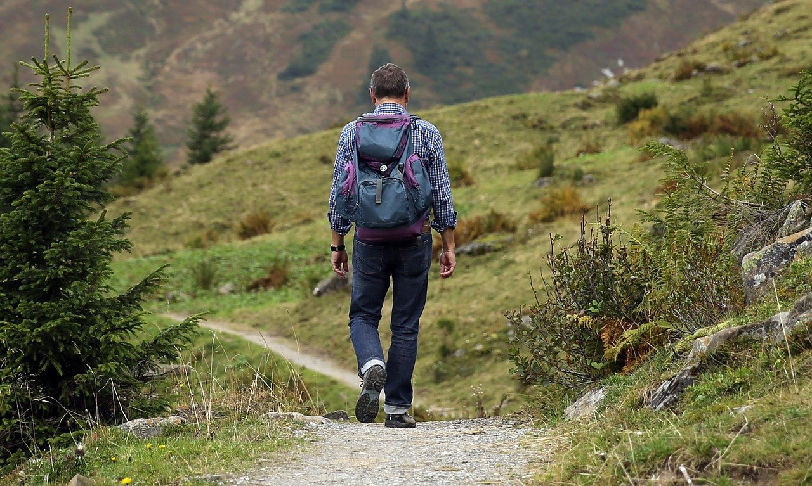

Korona Gór Polski
Korona Gór Polski ustanowiona została w 1997 roku, a tworzy ją 28 najwyższych szczytów wszystkich pasm górskich naszego kraju. Aby zostać jej zdobywcą trzeba wejść na nie pokonując siłą własnych mięśni ponad 30 tysięcy metrów n.p.m. Chętni do tego czynu powołali 13 grudnia 1997 r. Klub Zdobywców Korony Gór Polski, do którego należy ponad 60 tysięcy miłośników gór. Spośród nich godnością Zdobywcy szczyci się blisko 3000 osób.
Laura Zacharuk | nr | pasmo | nazwa | wysokość |
|---|---|---|---|
| 1 | Góry Świętokrzystkie | Łysica | 612 |
| 2 | Masyw Ślęży(Przedg.Sud) | Ślęża | 718 |
| 3 | Góry Kaczawskie | Skopiec | 724 |
| 4 | Góry Bardzkie | Kłodzka Góra | 765 |
| 5 | Góry Wałbrzyskie | Chełmiec | 869 |